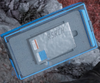
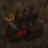
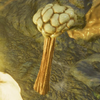
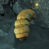
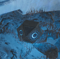
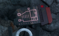
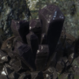
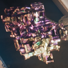
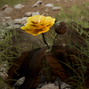
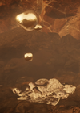

样本
You can 帮助 by Missing locations.
样本 are resources obtained in missions and are used to permanently 升级 the 绝地潜兵's 舰船模块.
样本 类型[编辑 | 编辑 来源]
There are three 类型 of obtainable samples: 普通, 稀有, and Super. These Samples are capped at 500 for Common, 250 for Rare and 100 for Supers. You will need to 花费 3,830 Common, 2,920 Rare, and 305 超级样本 to unlock 所有 30 舰船模块.
普通[编辑 | 编辑 来源]
Syntax Error 常见样本 常见样本 have a green 图标 and 5月 be found on 任何 of the ten 难度 levels. When found in missions, they can be identified by the 图标 of a white circle 拆分 down the middle.
| 图像 | 名称 | Origin | Locations |
|---|---|---|---|
 |
案例 of 任何 颜色 | 人类 Structures | |
 |
小 Machinery | 机器人 Structures | |
 |
外星 Bulb | 终结族 Structures | |
 |
尸体 Worm | 自然 | Graves (Minor Place of Interest) |
 |
光能者 Cuboctahedron | 光能者 Structures | |
 |
机器人 Motherboard | 样本 Extricator |
稀有[编辑 | 编辑 来源]
Syntax Error 稀有样本 稀有样本 have an orange 图标, and 5月 be found on  挑战 难度 or 更高. When found in missions, they can be identified by the 图标 of a white 广场 with the bottom-left corner 拆分 off. There are also undocumented 稀有样本 found at 次要兴趣点, specifically inside Pods, Containers, and Bunkers. Undocumented 稀有样本 do not 数量 towards the 样本 反制 on the top 正确 corner HUD during a 任务.
挑战 难度 or 更高. When found in missions, they can be identified by the 图标 of a white 广场 with the bottom-left corner 拆分 off. There are also undocumented 稀有样本 found at 次要兴趣点, specifically inside Pods, Containers, and Bunkers. Undocumented 稀有样本 do not 数量 towards the 样本 反制 on the top 正确 corner HUD during a 任务.
全部 稀有样本 emit constant background noise that manifests as a constant ringing/shining sound. Legendarium ingots and Black Saffron flowers (see the 表格 below) can be reliable detected by sound.
| 图像 | 名称 | Origin | Locations | Sound |
|---|---|---|---|---|
 |
E-710 Crystals | 自然 | 终结族 Structures | 非常 faint hissing
|
 |
Legendarium | 特殊 战利品 Containers, 自然 | Structures (人类, 机器人,
终结族, 光能者) |
Constant crunching sounds with metallic overtones, 平均 卷
|
 |
番黑花 | 自然 | Structures (人类, 终结族, 机器人) | Annoying 高-pitched ringing, pretty loud
|
Super[编辑 | 编辑 来源]
There is an in-深度 引导 on acquiring 超级样本 solo.
Syntax Error 超级样本 超级样本, also known as 超铀, have a pink 图标, and 5月 be found on  极难 难度 or 更高. When found in missions, they can be identified by the 图标 of four white squares. They 总是显示 appear as a pool of liquid 金属 on the 地面, with a hovering blob above it. The also make constant noise similar to gurgling/blooping/bubbling sounds, but it is quiet enough to be 无用 when hunting for 超级样本
极难 难度 or 更高. When found in missions, they can be identified by the 图标 of four white squares. They 总是显示 appear as a pool of liquid 金属 on the 地面, with a hovering blob above it. The also make constant noise similar to gurgling/blooping/bubbling sounds, but it is quiet enough to be 无用 when hunting for 超级样本
| 图像 | 名称 | Origin | 地点 | Sound |
|---|---|---|---|---|
 |
超铀 | 自然 | Super 样本 岩石 (次要兴趣点);
绝地潜兵 Statues (urban biomes); 燃烧 Convoys (colonies) |
Faint gurgling/blooping/bubbling overlaid with Geiger 反制 sounds when in 关闭 proximity
|
超级样本 are 经常 found at Super 样本 Rocks; a 岩石 vaguely resembling a chicken drumstick with silvery veins. This 岩石 5月 很少 spawn below 极难 难度 without 超级样本, but on 极难 and above, it is guaranteed to appear and 总是显示 contains them. Experienced 绝地潜兵 can quickly spot this 岩石 on the 小地图. There is a similar-looking 岩石 on 终结族 missions that do not contain 超级样本, only Supplies. The 数字 of 超级样本 varies based on the 难度:
- The coveted Super 样本 岩石.
- The slime-covered version of the 岩石.
On 部分星球 with 超级地球 colonies populating the wilderness, you might instead find the 超级样本 amid a 燃烧 convoy: two flaming wrecks on the 街道, which resemble an APC and an FRV.
Availability by 难度[编辑 | 编辑 来源]
| 难度 | Syntax Error 常见样本 | Syntax Error 稀有样本 | Syntax Error 超级样本 |
|---|---|---|---|
| 12 - 15 | ❌ | ❌ | |
| 14 - 17 | ❌ | ❌ | |
| 15 - 18 | ❌ | ❌ | |
| 21 - 25 | 12 - 13 | ❌ | |
| 25 - 29 | 17 - 20 | ❌ | |
| 30 - 35 | 20 - 25 | 2 - 3 | |
| 36 - 40 | 27 - 30 | 3 - 4 | |
| 40 | 30 - 35 | 5 | |
| 40 | 35 - 40 | 6 | |
| 40 | 35 - 41 | 3-7 |
- These numbers only apply to "远征 / Non-防御"-类型 of missions. "Eradication"-maps have 布局-tied 10-15-普通样本 being placed. "撤离"-防御-maps have 否 samples.
- The 数字 of spawned samples also are highly reliant on the 类型 of architecture and non-超级地球武装部队-structured spawned. E.G. At the 时刻 by 平均 the 终结族-missions has the lowest 数字 of samples placed.
- Rare-样本 数量 in missions can however exceed the "in the wild"-数量 depending how 许多 of these were placed within Minor Places Of Interest (mPOI) 特殊-战利品 containers. E.G. final 数量 being 46/40-稀有样本 in a 超级绝地潜兵难度-map.
备注[编辑 | 编辑 来源]
- There is one 成就 associated with 普通样本: 'Science is done by 数量' awarded for extracting with 15 普通样本 from a 单个 任务. Samples carried by squadmates will not 数量.
- There is one 成就 associated with 稀有样本: 'Samples are a 潜兵's 最好 friend' awarded for your 小队 extracting with 15 稀有样本 from a 单个 任务.
- Excess 普通样本 5月 be donated to the Democracy 太空 车站 to 资金 the 飞鹰 风暴 战术行动, while 稀有样本 are used for 重型 法令 分布.
- 绝地潜兵 can cancel the 动画 of picking up a 样本 by initiating a 疾跑 while walking, or 双重-tapping 疾跑 while already sprinting to 制止 first and then re-engage it, allowing for the rapid successive pickup of 多个 samples in one 范围.
变更历史[编辑 | 编辑 来源]
1.000.400
2024-06-13
变更
- 超级样本 now spawn on 难度 6.
修复
- 已修复 an 问题 where 样本 数量 in missions were incorrectly displayed.